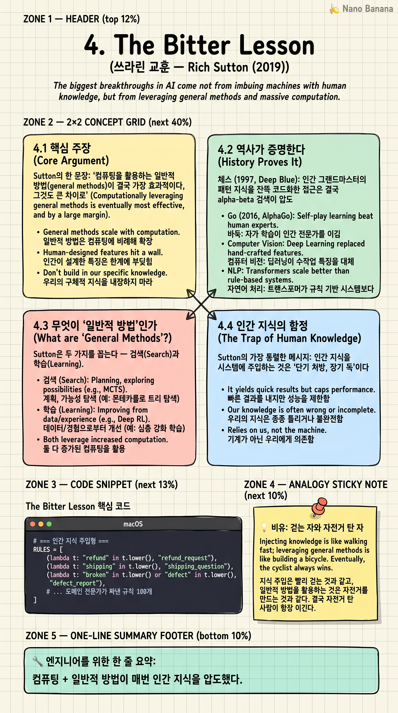

The Bitter Lesson

🎯 학습 목표
- Sutton이 말하는 '쓰라린' 교훈의 의미를 정확히 이해한다
- 체스·바둑·NLP에서 동일한 패턴이 반복된 역사를 안다
- Search와 Learning이 왜 핵심인지 설명할 수 있다
- AI 시대에 '인간 지식 주입' 함정을 식별한다
- 이 교훈을 자기 엔지니어링 결정에 적용한다
Rich Sutton — 강화학습의 아버지, 2024년 튜링상 수상자 — 가 2019년에 쓴 단 2페이지 짜리 짧은 글. 그러나 영향력으로는 21세기 AI 에세이 중 가장 거대하다. 한 줄 요약: '인간이 자기 지식을 시스템에 주입하려 한 모든 시도는, 연산을 활용하는 일반적 방법(검색·학습)에 결국 압도당했다.'
Sutton은 이것이 '쓰라리다(bitter)'고 말한다. 왜냐하면 우리가 사랑한 — 사람의 통찰을 코드로 옮기는 — 그 우아한 접근들이 매번 패배했기 때문이다. 체스, 바둑, 음성 인식, 컴퓨터 비전, 그리고 지금의 LLM까지. ChatGPT와 Claude의 작동 원리를 이해하려면 이 글에서 시작해야 한다.
핵심 내용
4.1 핵심 주장
Sutton의 한 문장: '컴퓨팅을 활용하는 일반적 방법(general methods)이 결국 가장 효과적이다, 그것도 큰 차이로.'
70년 AI 연구를 돌아보면 한 패턴이 끊임없이 반복된다. (1) 연구자들이 자기 도메인 지식을 시스템에 주입한다. (2) 단기적으론 잘 된다. (3) 컴퓨팅이 더 싸지고 더 많아진다. (4) 단순한 일반적 방법(검색·학습)이 더 많은 컴퓨팅으로 무장하고 등장한다. (5) 인간 지식 기반 시스템을 압도한다. (6) 연구자들은 절망한다.
이게 쓰라린 교훈인 이유: 연구자들은 자기 통찰을 사랑한다. '나는 이 도메인을 안다, 그 지식을 모델에 넣어주면 더 잘할 것이다.' 하지만 매번 틀린다.
4.2 역사가 증명한다
체스 (1997, Deep Blue): 인간 그랜드마스터의 패턴 지식을 잔뜩 코드화한 접근은 결국 alpha-beta 검색을 큰 컴퓨팅으로 돌린 무차별 검색에게 졌다.
바둑 (2016, AlphaGo): 바둑은 검색 공간이 너무 커서 무차별이 안 통한다고 했다. 하지만 AlphaGo는 self-play 강화학습 + Monte Carlo Tree Search라는 '일반적 방법'으로 인간 지식 기반 봇들을 압도했다.
음성 인식 (2010년대): 음운학·언어학 지식을 잔뜩 넣은 hidden Markov 모델들이 지배하다가, 신경망 + 거대 데이터가 그걸 다 갈아엎었다.
컴퓨터 비전 (2012, AlexNet): SIFT 같은 손-설계 feature가 CNN + GPU에 무너졌다.
자연어 처리 (2017-2022): 구문 분석·시맨틱 분석을 손으로 설계하던 모든 파이프라인이 Transformer + 거대 코퍼스에 무너졌다. ChatGPT는 이 패턴의 가장 화려한 사례다.
4.3 무엇이 '일반적 방법'인가
Sutton은 두 가지를 꼽는다 — 검색(Search)과 학습(Learning).
검색: 가능한 공간을 알고리즘으로 탐색. 체스의 alpha-beta, 바둑의 MCTS, LLM 추론의 chain-of-thought·tree-of-thought·MCTS-decoding. 검색은 '한 번에 답을 내지 말고 여러 가능성을 펼쳐서 평가하라'는 일반적 방법.
학습: 데이터에서 패턴을 추출. 신경망 학습, RL, 자기지도 학습. 학습은 '명시적으로 가르치지 말고 예시를 보고 일반화하라'는 일반적 방법.
두 방법의 공통점: 도메인 지식 의존도가 낮다. 같은 알고리즘이 체스도 풀고 바둑도 풀고 단백질 구조도 푼다. 그래서 컴퓨팅이 늘어날수록 자동으로 더 강력해진다.
4.4 인간 지식의 함정
Sutton의 가장 통렬한 메시지: 인간 지식을 시스템에 주입하는 것은 '단기 처방, 장기 독'이다.
단기적으론 효과 있다. 도메인 전문가의 지식을 코드화하면 빠르게 baseline을 이긴다. 논문이 나오고 학회 발표가 된다. 하지만 그 지식은 시스템의 확장을 막는다. 컴퓨팅이 10배 늘어났을 때, 일반적 방법은 자동으로 10배 강해지지만 인간 지식 기반 시스템은 '내 지식의 한계'에 갇힌다.
더 심각한 건 인간 지식이 일반적 방법의 학습을 방해한다는 점이다. 사전 정의된 feature, 사전 정의된 규칙, 사전 정의된 보상은 모두 모델이 더 나은 표현을 스스로 찾는 걸 막는다. '내가 가르친 것보다 더 나은 답은 보일 수 없다.'
Sutton의 결론: '컴퓨팅을 활용할 수 있는 단순하고 일반적인 방법을 만들고, 도메인 지식 주입의 유혹을 거부하라.'
4.5 AI 에이전트 시대에 어떻게 적용되나
이 교훈은 AI 시대 모든 엔지니어링 결정의 나침반이다.
프롬프트에 도메인 규칙을 잔뜩 박는 것 vs 모델이 더 큰 컴퓨팅과 도구로 스스로 판단. 단기엔 전자가 빠르지만, 모델이 강해질수록 전자는 발목을 잡는다.
복잡한 분류 파이프라인 vs 단일 LLM에 잘 정의된 평가. Bitter Lesson 식으로 보면 후자가 결국 이긴다.
손-설계 에이전트 워크플로 vs 모델이 도구를 스스로 호출하는 ReAct 식 루프. Anthropic의 'Building Effective Agents'(8장)도 이 균형을 다룬다.
주의: Sutton의 교훈은 '인간 지식이 항상 나쁘다'가 아니다. '컴퓨팅이 확장될 때, 인간 지식 의존도는 결국 발목이 된다'는 것. 지금 당장의 작은 시스템에서 도메인 지식이 도움 되는 건 사실이지만, 그게 'AGI까지 가는 길'은 아니다.
💡 비유로 이해하기
어떤 평지를 가로질러야 한다. 한 사람은 평생 그 길을 걸어서 모든 지름길과 함정을 안다. 다른 사람은 자전거를 탔지만 지름길은 모른다.
처음엔 걷는 자가 빠르다. 지름길로 컷한다. 하지만 자전거 탄 자는 5분 만에 따라잡고, 10분 뒤엔 저 멀리 가 있다. 자전거의 속도는 사람의 지름길 지식을 압도한다.
여기서 자전거 = 컴퓨팅. 지름길 지식 = 인간이 주입한 도메인 지식. AI 역사 70년이 매번 같은 결말로 끝났다 — 자전거가 결국 이긴다. 컴퓨팅이 더 싸지고 더 강해지기 때문이다.
이게 쓰라린 이유: 걷는 자는 자기 지식을 사랑한다. 그 지식이 결국 무용해진다는 사실을 받아들이기 어렵다. Sutton의 글이 'bitter'한 이유다.
💻 코드 예시
동일한 분류 문제를 (a) 인간 지식 주입형과 (b) 일반적 학습형으로 풀어보자. 핵심은 컴퓨팅/데이터가 늘었을 때 어느 쪽이 확장되는가다.
# === 인간 지식 주입형 ===
RULES = [
(lambda t: "refund" in t.lower(), "refund_request"),
(lambda t: "shipping" in t.lower(), "shipping_question"),
(lambda t: "broken" in t.lower() or "defect" in t.lower(), "defect_report"),
# ... 도메인 전문가가 짜낸 규칙 100개
]
def classify_rules(text: str) -> str:
for rule, label in RULES:
if rule(text):
return label
return "unknown"
# 데이터가 10배 늘어도 — 규칙은 자동으로 늘지 않는다.
# 컴퓨팅이 100배 강해져도 — for 루프가 빨라질 뿐 새 규칙은 안 생긴다.
# === 일반적 학습형 ===
import anthropic
client = anthropic.Anthropic()
def classify_llm(text: str, examples: list) -> str:
# few-shot 예시 + LLM의 일반 추론
prompt = "\n".join(f"Text: {x['t']}\nLabel: {x['l']}" for x in examples)
msg = client.messages.create(
model="claude-opus-4-7",
max_tokens=20,
messages=[{"role": "user",
"content": f"{prompt}\nText: {text}\nLabel:"}],
)
return msg.content[0].text.strip()
# 데이터(examples)가 늘면 → 자동으로 더 정확해진다.
# 모델이 강해지면(Claude 3 → 4 → 5) → 자동으로 더 정확해진다.
# 컴퓨팅을 늘릴 수 있는 자리(extended thinking 등)가 있다.
두 함수의 '확장 가능성'을 비교하라. 규칙 기반은 컴퓨팅/데이터가 늘어도 자동으로 강해지지 않는다. 인간이 규칙을 더 써야 한다. LLM 기반은 데이터를 더 주거나, 더 강한 모델로 갈아끼우거나, 더 많은 thinking 시간을 주는 것만으로 자동으로 강해진다. Bitter Lesson은 이 비대칭이 시간이 흐르면 결정적 차이가 된다고 말한다.
🏭 현업에서의 평가
✅ 시니어가 보는 것
- 단기 효율과 장기 확장성의 트레이드오프를 의식하는지
- 프롬프트·파이프라인에 인간 지식을 박을 때 그 비용을 인지하는지
- 검색(thinking, MCTS)과 학습(fine-tuning, RLHF) 두 축을 균형 있게 활용하는지
- 모델 업그레이드 시 자동으로 성능이 따라오는 시스템을 설계하는지
⚠️ 레드 플래그
- '우리 도메인은 특수하다'며 일반적 방법을 거부
- 복잡한 규칙 파이프라인을 자랑하고 LLM은 보조로 쓰는 설계
- 모델 버전을 올리는데 코드 마이그레이션이 거대한 일이 되는 시스템
- 도메인 지식 코딩 시간을 데이터 큐레이션·평가 셋 구축보다 우선시
🎤 예상 인터뷰 질문
- 최근 시스템에서 '도메인 지식 주입'과 '일반적 방법' 사이의 결정을 어떻게 내렸습니까?
- Bitter Lesson을 받아들이는 것과 '오늘 작동하는 시스템이 필요하다' 사이의 균형은 어떻게?
- 당신 시스템이 모델 버전 업과 함께 자동으로 강해지는 부분과, 직접 수정해야 강해지는 부분을 구분해 주세요
✨ 핵심 요약
쓰라린 한 줄
컴퓨팅 + 일반적 방법이 매번 인간 지식을 압도했다.
검색과 학습
두 가지 일반적 방법이 70년간 모든 승리를 만들었다.
단기 처방, 장기 독
도메인 지식 주입은 빠른 baseline을 주지만 확장의 발목.
쓰라림의 출처
연구자가 사랑한 우아한 통찰이 매번 무차별에 졌다.
Moore's Law의 동맹
컴퓨팅이 싸지면 일반적 방법이 자동으로 강해진다.
LLM의 이론적 기반
이 글이 ChatGPT·Claude의 작동 원리를 설명한다.
엔지니어링 나침반
결정 앞에서 묻기 — '컴퓨팅이 10배면 어느 쪽이 자동으로 강해지나?'
전부냐 아니냐는 아니다
지금 작동하려면 도메인 지식이 필요하다. 하지만 그게 미래는 아니다.